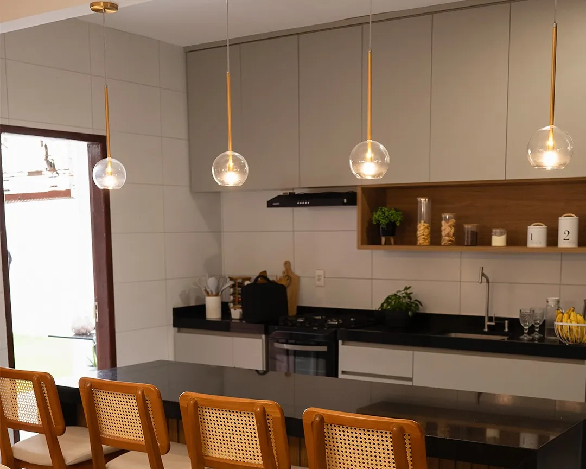
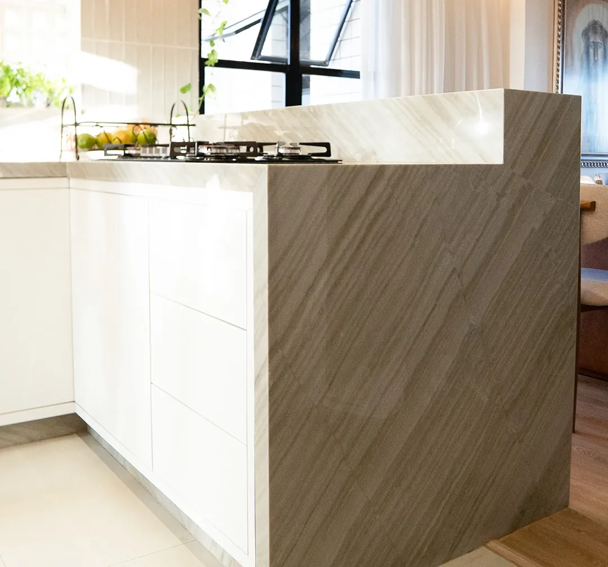
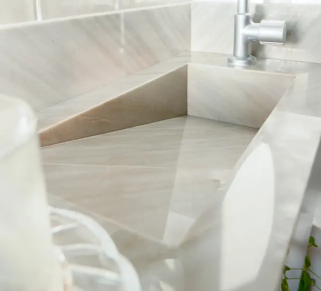
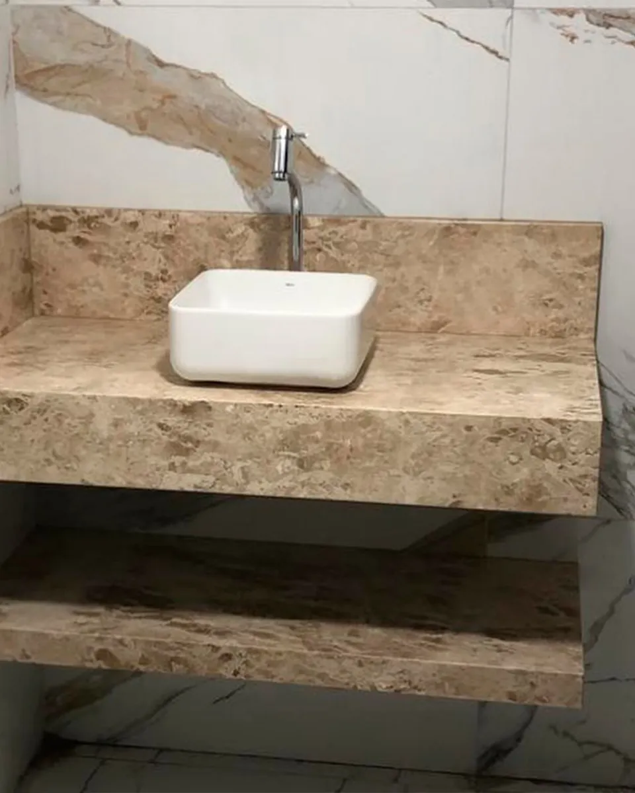
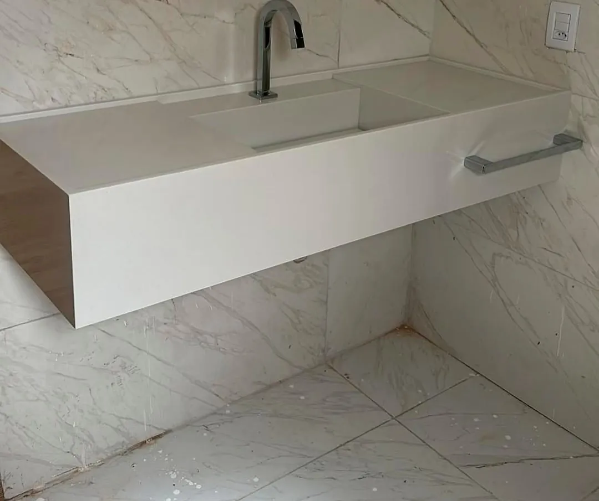
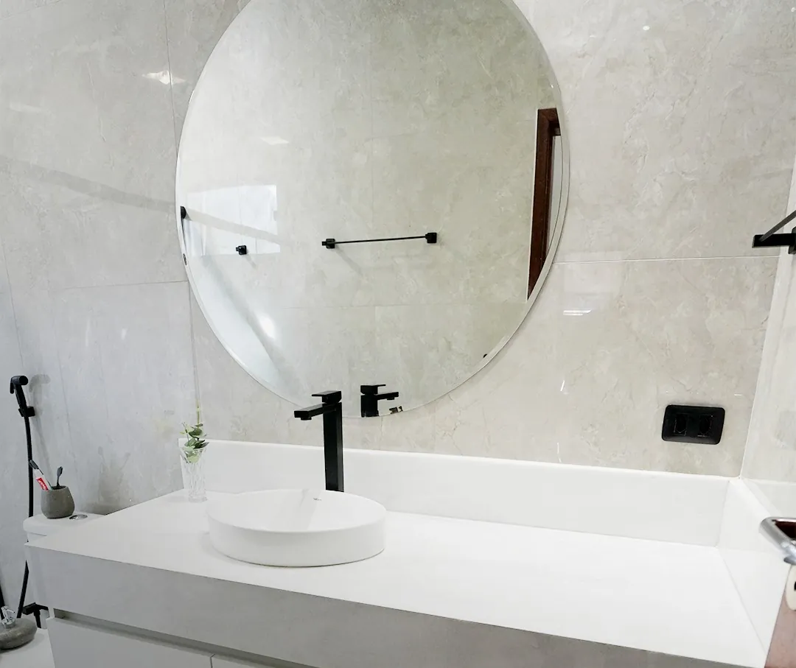
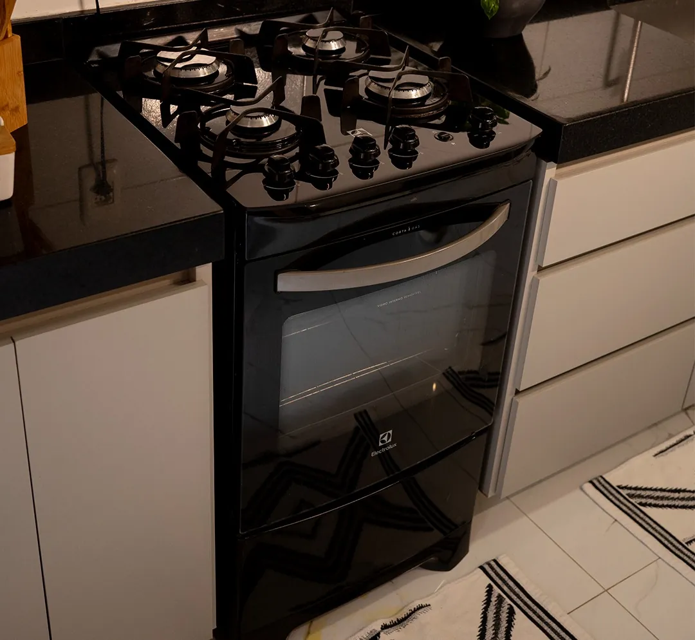
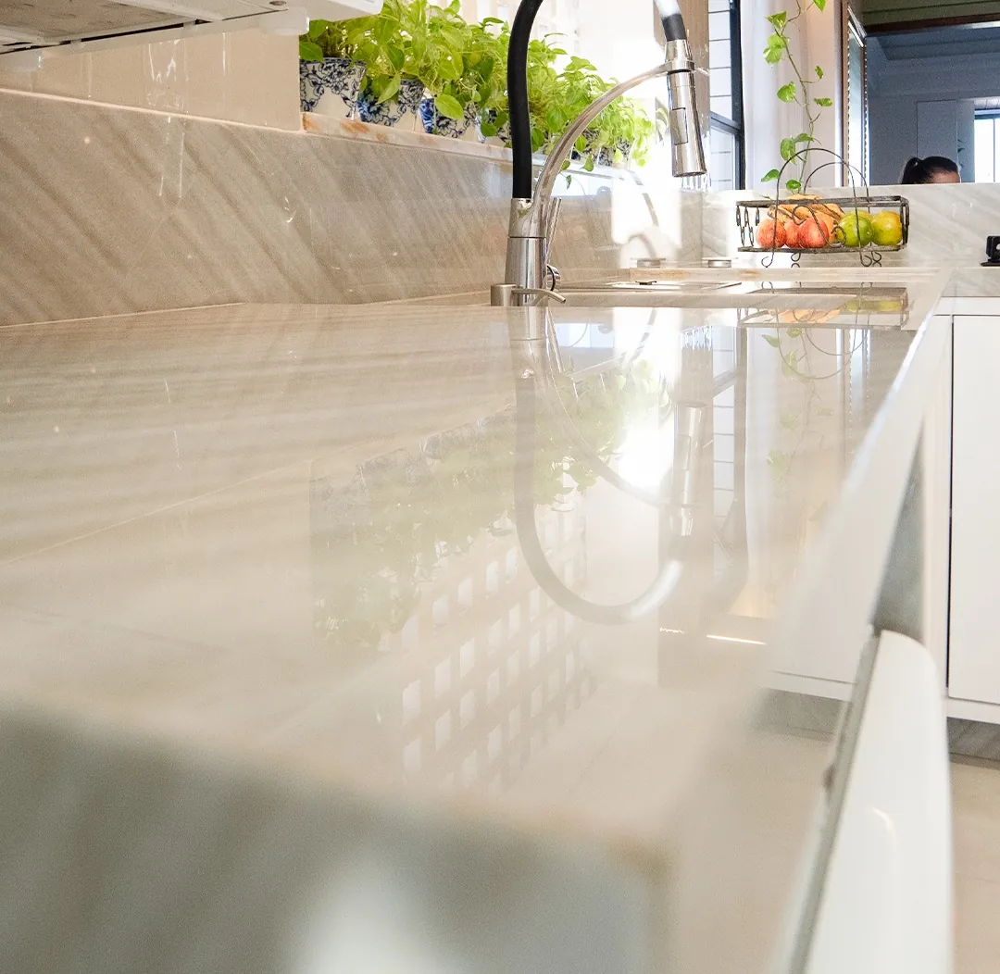

Bancada de cozinha
Pia, ilha e bancada de apoio em granito, mármore ou quartzo, com os recortes de cuba e fogão no lugar certo.
Orçar bancada de cozinhaNatal e região metropolitana, desde 2017
Banheiros, cozinhas e bancadas. Transformamos seu ambiente com os melhores Mármores, granitos e Quartzitos!


É o que mais fazemos, todos os dias. Cada bancada é confeccionada para o seu ambiente e instalada pela nossa equipe.

Pia, ilha e bancada de apoio em granito, mármore ou quartzo, com os recortes de cuba e fogão no lugar certo.
Orçar bancada de cozinha
Para banheiros e lavabos, com cuba de apoio, de embutir ou esculpida na mesma pedra da bancada.
Orçar bancada de banheiroTudo em mármore, granito ou quartzo, com confecção e instalação.

Em granito, mármore ou quartzo, na mesma pedra da bancada.
Acabamento em pedra para as janelas.
Para portas e passagens entre ambientes.
A divisão do box do banheiro em pedra.
Em pedra, para residências e empresas.
Confecção e instalação das peças.
Peças em pedra para a cozinha.
Cor, resistência e uso mudam de um material para o outro. No atendimento, indicamos qual faz mais sentido para cada ambiente.

Elegância clássica, indicada para banheiros e revestimentos internos.
Na foto Bancada de suíte em Branco Extra, um mármore com menos veios e menos pigmentação.

O clássico que funciona em cozinhas e banheiros.
Na foto Preto São Gabriel polido, com o respaldo seguindo por trás do fogão de piso para dar continuidade à bancada.

Superfície de engenharia com visual homogêneo, para projetos que pedem continuidade visual.
Na foto Bancada de cozinha em quartzo, com a superfície refletindo a luz do ambiente.
Fotos reais de peças que saíram da nossa marmoraria. Toque em uma foto para ampliar.
Antes de ter a própria empresa, Wilson trabalhou 16 anos como operário em uma marmoraria de Natal. É dessa experiência que vem o cuidado com o acabamento e o respeito ao prazo combinado.
Somos uma empresa familiar, e o atendimento é do nosso jeito: humanizado e personalizado, do primeiro contato até a peça instalada.
Wilson trabalha como operário em uma marmoraria de Natal.
Abre a primeira empresa no segmento.
Nasce a Wilson Mármores, na região metropolitana de Natal.
Cinco pessoas na produção, atendendo residências e empresas.
Somos exigentes com o prazo combinado com você.
A qualidade do acabamento é o que nos representa em cada peça.
Humanizado e personalizado, com alguém que ouve o seu projeto.
Nosso compromisso é você satisfeito com o resultado.
As avaliações são públicas e ficam no nosso perfil do Google.
Conte o que você precisa. Ao enviar, a mensagem já chega pronta no nosso WhatsApp e a conversa continua por lá.
Estamos na região metropolitana de Natal. Atendemos a capital, as cidades ao redor e também o interior, conforme a demanda.
Trabalhamos com mármores, granitos e quartzos, em rochas ornamentais nacionais e importadas.
Bancadas de cozinha e de banheiro, cubas esculpidas, peitoris, soleiras, divibox, divisórias, túmulos e tábuas de carne.
Sim. Fazemos a confecção e a instalação das peças.
O valor muda conforme a peça, as medidas e o material escolhido. Envie o que você precisa pelo WhatsApp e passamos o orçamento.
No atendimento, mostramos as opções de cores e indicamos o material mais adequado para cada ambiente, considerando a resistência e o uso de cada peça.
Sim. Atendemos residências e empresas.
De segunda a quinta, das 7h às 17h. Na sexta, das 7h às 16h.